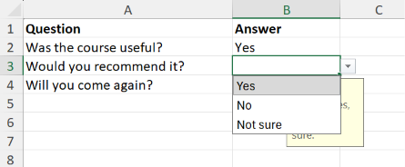
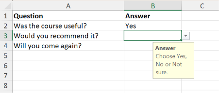

Data validation
Data validation restricts what can be typed into a cell, as Excel's Data → Data Validation dialog does. The most common use is a drop-down list, but a cell can also be limited to numbers in a range, dates after a given day, text of a certain length, or anything a formula approves. A validation can also show a message when the cell is selected, and choose what happens when an invalid value is entered.
Validation applies to what a user types into Excel. Values written by XLSX.jl are not checked.
Adding and deleting validations changes the workbook, so open the file with mode="rw" (or start from XLSX.newxlsx). Validations can be read from any file.
Drop-down lists
Give the items as values:
XLSX.openxlsx("survey.xlsx", mode="rw") do xf
sheet = xf["Responses"]
XLSX.addDataValidation(sheet, "B2:B200"; values=["Yes", "No", "Not sure"])
endIn Excel, each cell in the range gets a drop-down arrow that opens the list:

values is the quickest way to make a short list. Excel limits a list typed this way to 255 characters and doesn't allow commas in the items. For a longer list, or one that should be easy to change, put the items in cells and give their range as formula1:
XLSX.addDataValidation(sheet, "C2:C200"; type=:list, formula1="Lists!\$A\$1:\$A\$40")Use absolute references (with $) here, as in Excel. A relative reference is taken relative to each validated cell, so the list would move down the sheet from row to row. A defined name works too: formula1="Departments".
Pass dropdown=false to check the value against the list without showing a drop-down arrow.
Numbers, dates, times and text length
For :whole, :decimal, :date, :time and :textLength, operator says how the value compares with formula1, and with formula2 for :between and :notBetween. :between is the default.
XLSX.addDataValidation(sheet, "D2:D200"; type=:whole, formula1=1, formula2=10)
XLSX.addDataValidation(sheet, "E2:E200"; type=:decimal, operator=:greaterThan, formula1=0)
XLSX.addDataValidation(sheet, "F2:F200"; type=:date, operator=:greaterThanOrEqual, formula1=Date(2025, 1, 1))
XLSX.addDataValidation(sheet, "G2:G200"; type=:time, formula1=Time(9), formula2=Time(17, 30))
XLSX.addDataValidation(sheet, "H2:H200"; type=:textLength, operator=:lessThanOrEqual, formula1=50)The limits may be numbers, Dates, Times or DateTimes, or references and formulas as strings, e.g. formula1="=TODAY()" or formula1="\$K\$1" to take the limit from a cell.
Custom rules
A :custom validation accepts a value when the formula in formula1 is true. Write the formula for the first cell of the range, and Excel adjusts it for the others, as with conditional formats:
XLSX.addDataValidation(sheet, "J2:J200"; type=:custom, formula1="=COUNTIF(\$J\$2:\$J\$200, J2)=1",
error="This code has already been used.")Messages
Every validation can show an input message when the cell is selected, and an error message when an invalid value is entered:
XLSX.addDataValidation(sheet, "D2:D200"; type=:whole, formula1=1, formula2=10,
promptTitle="Score", prompt="A whole number from 1 to 10.",
errorTitle="Invalid score", error="Enter a whole number from 1 to 10.",
errorStyle=:warning)The input message appears beside the selected cell. This one was set with promptTitle="Answer", prompt="Choose Yes, No or Not sure." on the drop-down list above:

errorStyle is :stop (the default) to refuse an invalid value, :warning to ask whether to keep it, or :information to accept it after a message. Titles may be up to 32 characters and messages up to 255.
To show a message without restricting the value, use type=:any:
XLSX.addDataValidation(sheet, "A1"; type=:any, prompt="Type the customer's full name.")Reading and deleting validations
XLSX.getDataValidations lists the validations on a sheet or in a workbook. XLSX.getDataValidation finds the one covering a cell. Each is a NamedTuple with the settings described above:
julia> dv = XLSX.getDataValidation(sheet, "B5");
julia> dv.range, dv.type, dv.formula1
(B2:B200, :list, "\"Yes,No,Not sure\"")Formulas are read without the leading =. A list given as values reads back as Excel stores it: one quoted string.
A cell can have only one validation, so adding one to a range that overlaps an existing validation is an error. XLSX.deleteDataValidation removes every validation lying entirely inside a range, and XLSX.deleteDataValidation(sheet, :) removes them all:
XLSX.deleteDataValidation(sheet, "B:B") # validations within column B
XLSX.deleteDataValidation(sheet, :) # every validation on the sheetSheet operations
References in validation formulas are kept up to date as sheets change. XLSX.renamesheet! renames them, XLSX.deletesheet! replaces references to the deleted sheet with #REF!, and in a copy made by XLSX.copysheet!, references to the original sheet point at the copy.
See also
- API: Data validation in Cells and data
- Related guides: Protecting a sheet and Unlocking cells, for input forms